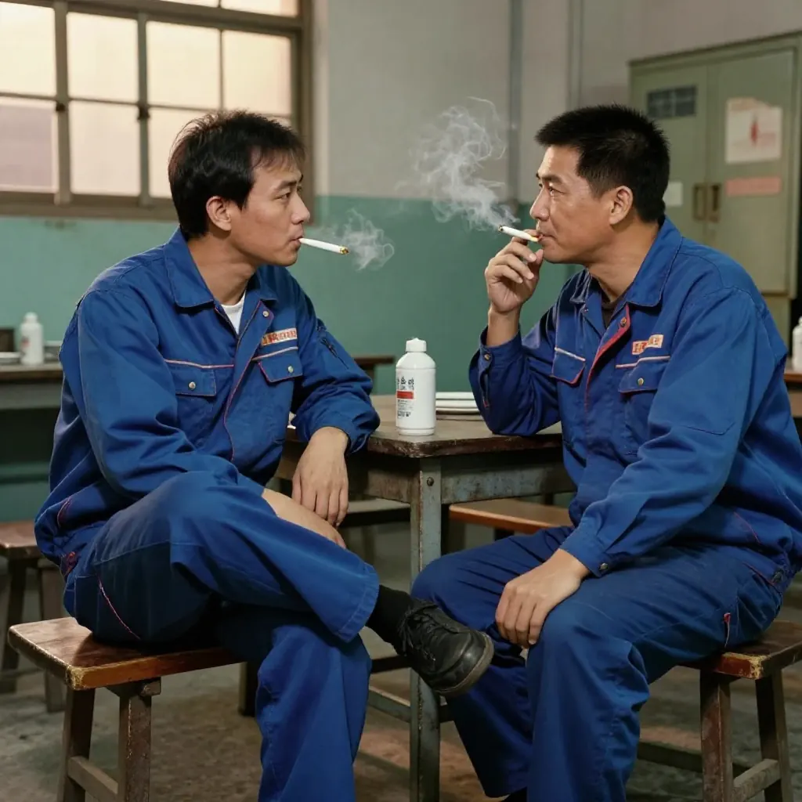
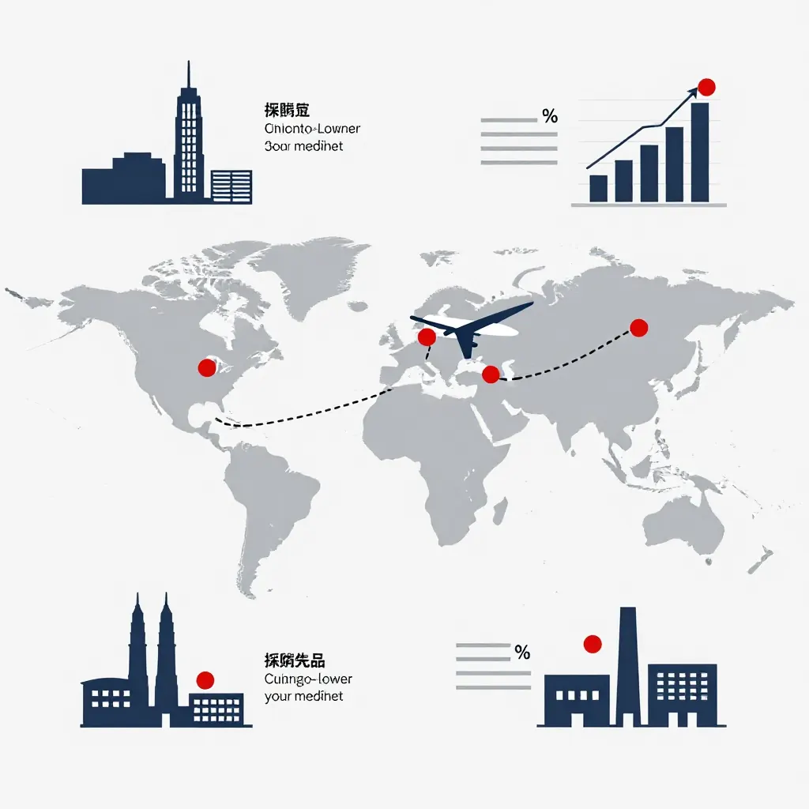
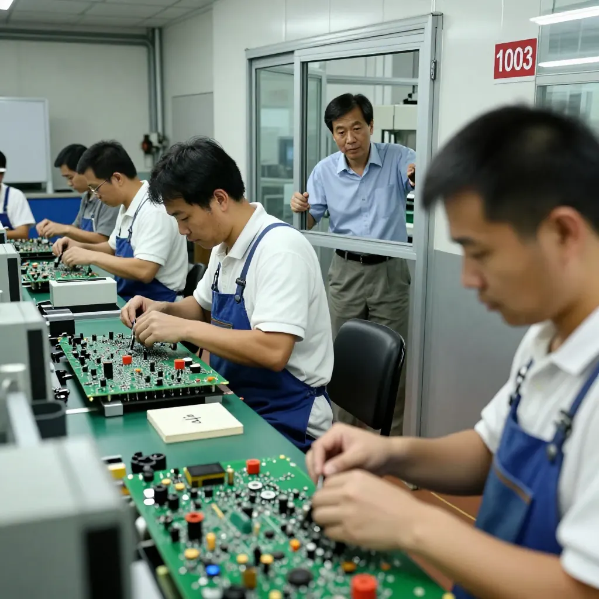
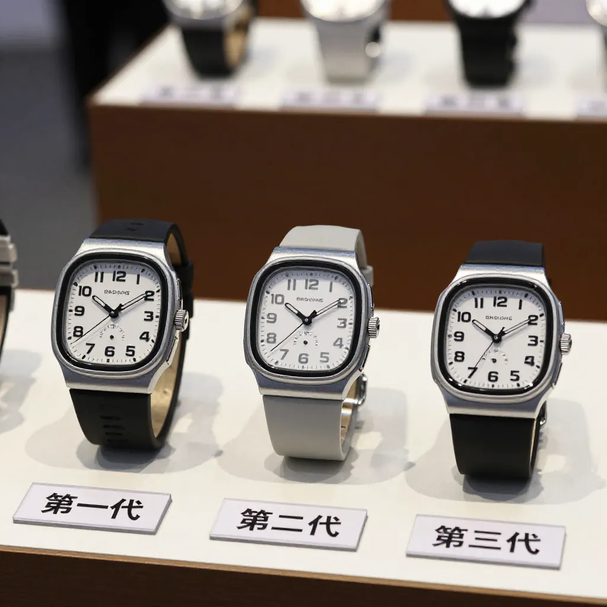

上集講到，2005年我用5000蚊收咗個澳大利亞客嘅專利，但心裏一早盤算住要"專登搞砸"張單。Last time I told you how, back in 2005, I bought an Australian client's patent for 5,000 dollars — while already planning to “deliberately botch” the order.
好多讀者問：有錢唔賺，做乜要搞砸？Quite a few readers asked: why sabotage an order when there is money to be made?
呢個就係今日要講嘅故仔。That is the story for today.
個客係澳大利亞人，拎住個細細嘅模具過嚟，一坐低就抛出一叠文件，話要簽保密協議、簽呢樣嗰樣，成個陣仗好似好專業。The client was Australian. He came in carrying a small mould, sat down and immediately threw a stack of papers on the table — an NDA to sign, this and that to sign, the whole performance laid on as if he were very professional.
我心谂：你嚟揾我，又唔信我，咁你嚟做乜？I thought to myself: you come to me for help and you don't trust me. So why come at all?
我直接同佢講：「你信我，就同我做。唔信我，拉倒。」I told him straight: “If you trust me, we work together. If you don't, forget it.”
佢又唔走，一次又一次咁磨：「幫我做啦幫我做啦。」He wouldn't leave. He kept grinding away at me: “Just make it for me, just make it for me.”
我冇即時應承，反而靜靜咁做咗件事——打聽。I didn't agree on the spot. Instead I quietly did one thing — I asked around.

一打聽，原來呢條友唔係淨係揾我。佢拎住同一件樣板，深圳東莞問勻晒Asking around, I found out this fellow wasn't only talking to me. He had the same sample and was going around all of Shenzhen and Dongguan,

即係點？用5000蚊試勻全中國，睇邊個接得住、做得好。邊個傻仔接咗，佢就攞住嗰套技術去壓下一家。In other words: spend 5,000 to audition all of China and see who can take it and do it well. Whoever the fool is that accepts, he takes that technology to the next factory and squeezes them with it.
呢招叫"海選"，我見唔少。The trick is called a “sea selection”. I've seen plenty of it.
我心入麵條數即刻打晒：你當我傻？你玩海選，我就要陪你玩？The sums went straight through my head: you think I'm stupid? You want to run a sea selection — do I have to play along?
所以我一不做二不休——既然你想用5000蚊買我嘅技術，我點解唔可以用5000蚊買你嘅概念？So, in for a penny, in for a pound — if you want to buy my technology for 5,000, why can't I buy your concept for 5,000?
我同佢簽咗約，收咗錢，但主動提出：「我先做500個樣板俾你，唔備咁多貨。」I signed the contract and took the money, but I made a point of saying: “I'll do 500 samples for you first. I won't stock any more than that.”
表麵係負責任，實際係專登做慢、做細、做爛，等佢覺得呢件嘢冇得玩，主動放棄。On the surface that looked responsible. In reality I was deliberately working slowly, making it small, making a mess of it, so he would decide there was nothing in it and walk away on his own.

外形改到唔同，結構微調，專利繞得開。The outside was completely different, the structure tweaked. It got around his patent.

你話我抄？天下文章，你抄我我抄你，只要唔雷同就得㗎啦。You call that copying? Everything under heaven is copied back and forth. As long as it isn't identical, it's fine.
佢防我，我唔可以防佢？佢玩海選，我玩"借種"。He guards against me — so can't I guard against him? He plays the sea selection; I play “borrowing the seed”.
結果呢？嗰5000蚊，買嘅唔止係一個專利，係成個行業嘅入場券。嗰個澳大利亞客而家唔知去咗邊，但我間公司仲喺度。The result? That 5,000 bought more than a patent. It bought a ticket into the whole industry. I have no idea where that Australian client is now, but my company is still here.
呢個就係生意——你計我，我計你，最後睇邊個計得遠。That is business — you scheme against me, I scheme against you, and in the end we see who thought further ahead.
點解要分上下集講？Why Tell It in Two Parts?
有讀者可能會問：點解唔可以一篇講完？Some readers may ask: why not tell it all in one piece?
因為呢個故仔係典型嘅「認識過程」：Because this story is a typical “getting to know someone” process:
- 上集（5000蚊就想開模？） — 從表現出驚訝到飲茶聽到「呢個好喎」，開始相信這個概念有市場Part one (5,000 dollars and you want a mould?) — from playing the shocked tradesman to hearing “this one's good” over tea, and starting to believe the concept had a market
- 下集（點解我要搞砸？） — 從打聽識破陰謀到主動搞砸，再到反過來利用客戶的行為Part two (why I sabotaged it) — from asking around and seeing through the scheme, to botching the order on purpose, to turning the client's own behaviour against him
生意常係兩麵鎗：Business is often a double-edged spear:
對方可能玩「海選」 — 用低價試水，尋找最便宜的代工廠；The other side may run a “sea selection” — testing the water with a low price to find the cheapest contract factory;
而你亦可以玩「借種」 — 接單學技術，然後改良出自己的產品。And you can play “borrowing the seed” — take the order, learn the technology, then improve it into a product of your own.
關鍵在於：你要看穿對方的意圖，同時保護自己的核心競爭力。The key is this: you have to see through the other side's intentions while protecting your own core competitiveness.
你計我，我計你，最後睇邊個計得遠。